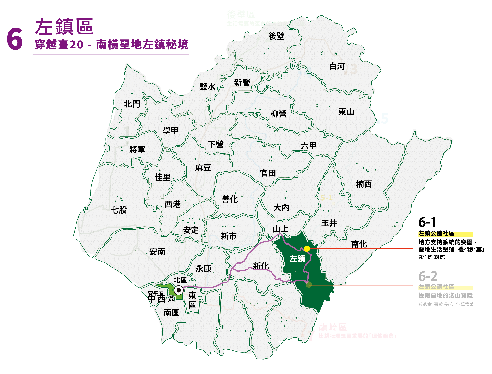
2019年臺南左鎮化石園區正式啟用之後，確實為左鎮地區帶來觀光人潮 ; 但是也因為缺少停留的餐飲週邊服務，往往客群也不容易再進一步往昔日老街聚集地及社區停留。
特派員想進一步認識左鎮的現在與過去，仰賴著網路的數位資訊做事前功課，從外景節目的專題拍攝、博物館合作留存的線上展覽、在地社區行銷的社群影像...等，漸漸的發現，在這些數位化資料的建立者及引路人，大多是來自左鎮當地的青年 - 賴政達，暱稱賴達。
透過賴達的數位資料，認識了串起地方支持系統以及在地生活日常，賴達也扎根在地創業，以「左達商號」研發具左鎮ＤＮＡ的商品開發，同時經營「左鎮行」的社群媒體，進行地方文化過去、現在、未來的田野調查，持續的挖掘紀錄左鎮 ; 更沒有料到，會承接起串連地方單位共同辦理「左鎮燈會」的重責大任，在完全自籌的情況下，回到左鎮老街成功辦理，並與團隊將已消失20年的左鎮夜市帶了回來。據賴達形容，活動當下左鎮的縣道在google map上呈現整條是紅色的，人滿為患，重現當年左鎮作為物資貿易匯集地曾經萬人空巷的盛景(註)。
左達商號 / 左鎮行
✧地點資訊：台南市左鎮區102號
✧預約電話： 0936 247 925
✧網站（含社群）：https://zuozhenexchange.com/
✧開放時間：13:00-17:00，依google商家公吿
✧小提醒：週三～五公休
左鎮零售市場40年鄉土味小吃 / 賴爸麻竹筍（酸筍、冷筍）
✧地點資訊：台南市左鎮區中正里150之2號
✧預約電話：06-573-1608
✧網站（含社群）：https://www.facebook.com/profile.php?id=100065072586536
✧開放時間：05:30-13:00
✧小提醒：週一/二公休
(註)《文化相放伴》#03 翻轉左鎮偏鄉命運 11：40 https://www.youtube.com/watch?v=rJan5ZskYuk
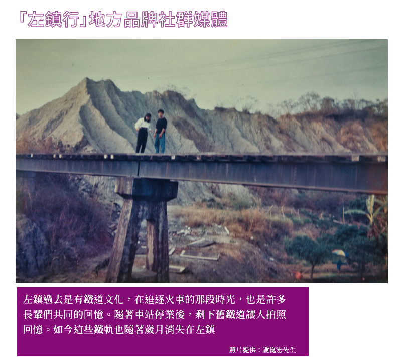
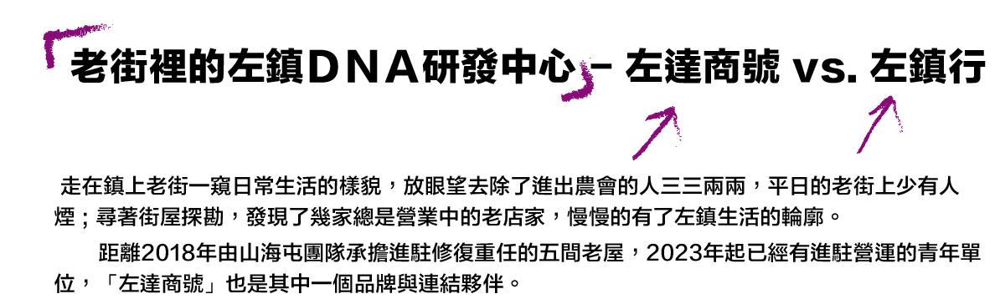
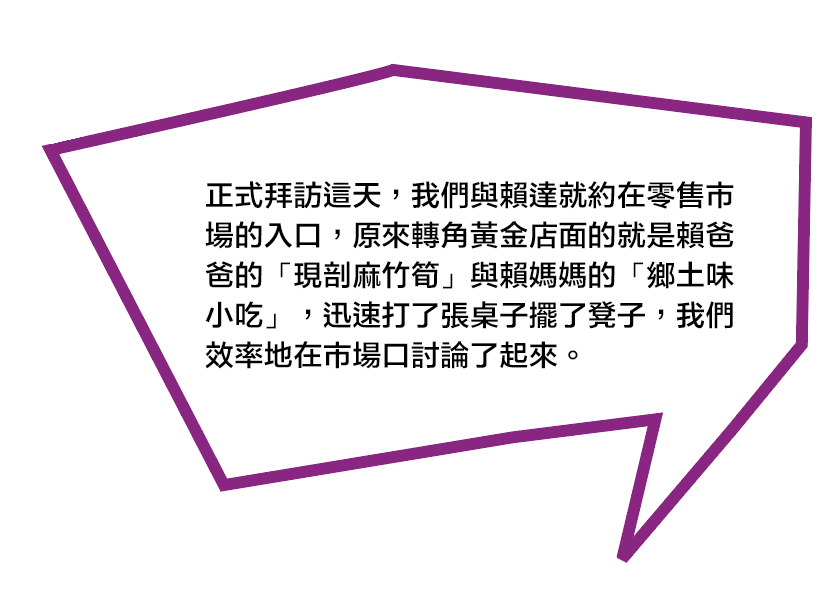
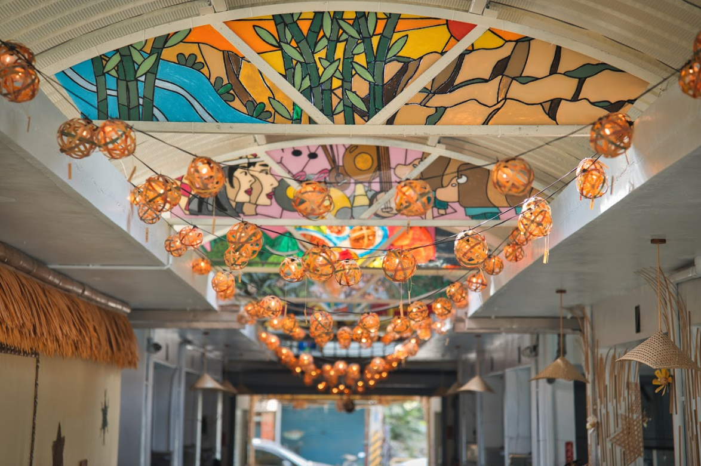
✧ 千歲團共創作品
以左鎮零售市場為起點，雖然大部分攤位已停止營業，但可以窺見市場天花板及攤位以別緻的竹編燈籠妝點，這裡是左達工作室重要的起點，因為「Green Maker 臺南市綠社區培力計畫」，邀請左鎮竹編工藝師－李芝熒老師教授傳統竹編燈球，也結合數位雷切，將左鎮的人、文、地、產、景，變成一幅幅的版畫，邀請老街及社區的長者們組成「千歲團」一起創作。將透過市場營造一次次的活動與共創，左鎮故事將市場化身老街的「心聚點」，也是各項地方活動，如：左鎮燈節、小老闆歪腰市集、駐地青年發表影像田野紀錄作品的社區舞台。
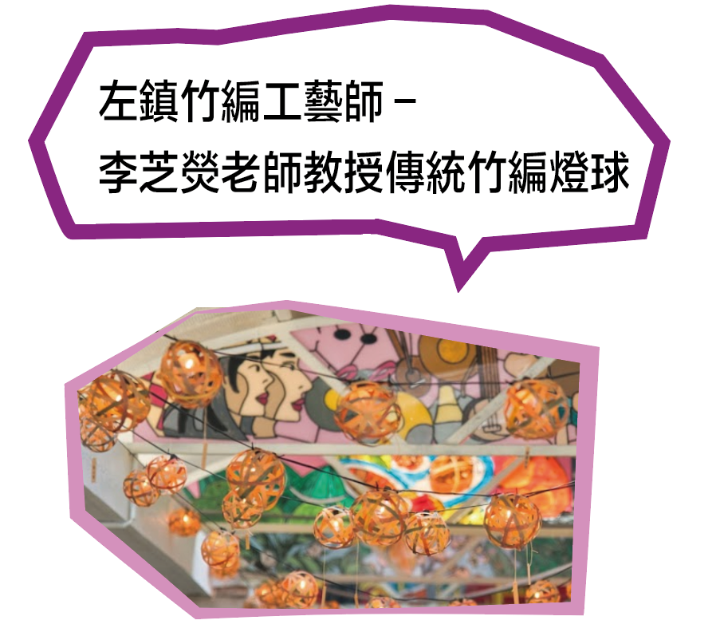
✧ 千歲團共創作品 局部
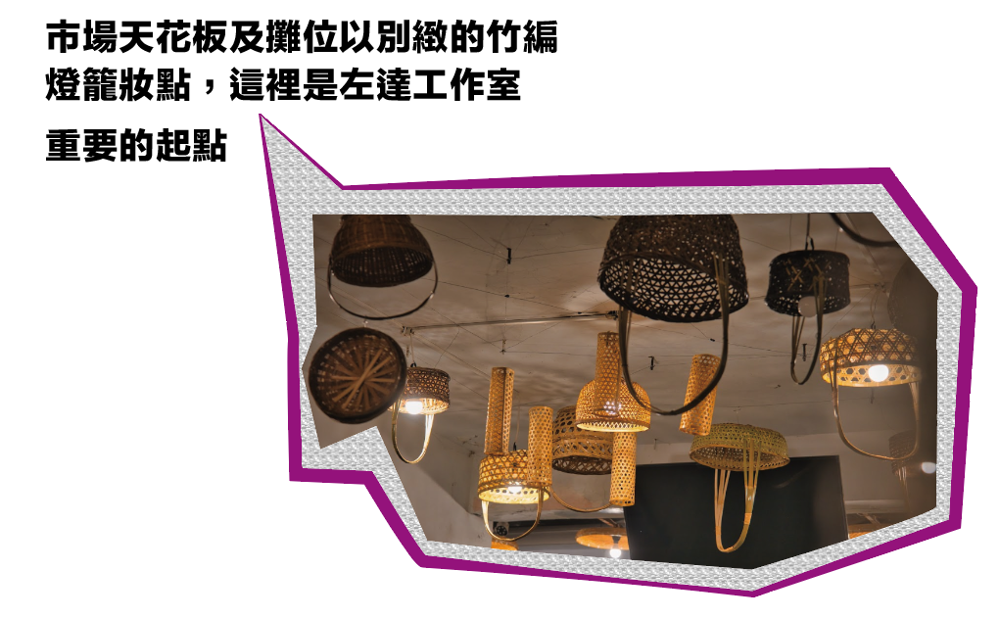
✧ 市場竹編燈
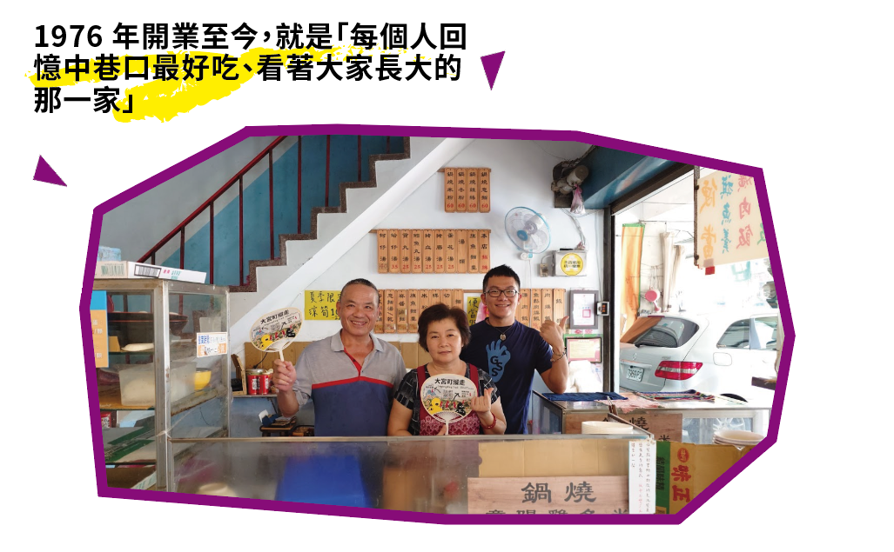
✧ 鄉土味小吃-政達與賴爸/賴媽一家
約訪這天的時間可惜已經過中午，沒口福吃到賴媽媽的「鄉土味小吃」(註1)，老闆娘謙虛溫柔眯眯笑著的招呼我們，可以感覺得出來，這間麵店自1976(註2) 年開業至今，就是「每個人回憶中巷口最好吃、看著大家長大的那一家」。賴媽媽熱心地拿出今年醃存的酸筍罐介紹，自家的飯菜都是用先生自種的麻竹筍，客人來都指名要吃「筍子飯」配羹（筍絲），滷肉跟雞絲變配角了。
(註1) 在台灣的故事精選https://www.youtube.com/watch?v=QoO8557y3ZI
(註2)【GoGoWin台南外食家EP38】 1976年的老店！ https://www.facebook.com/watch/?v=5352316041476371
✧ 固定於市場前出攤的現剖麻竹筍（攝影／上下游 邱勤庭）
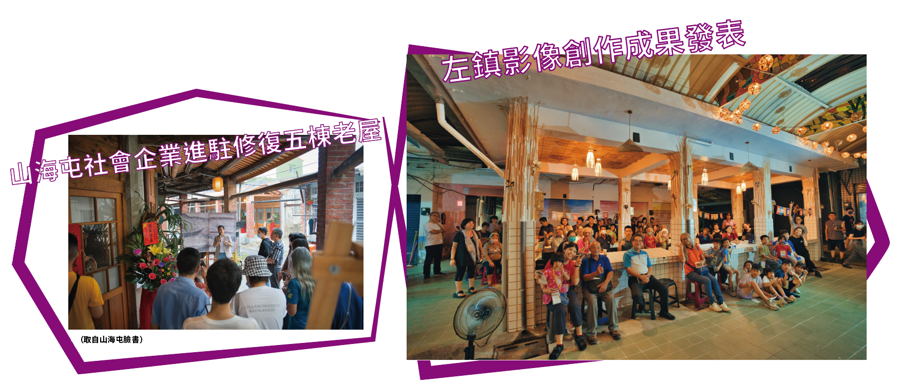
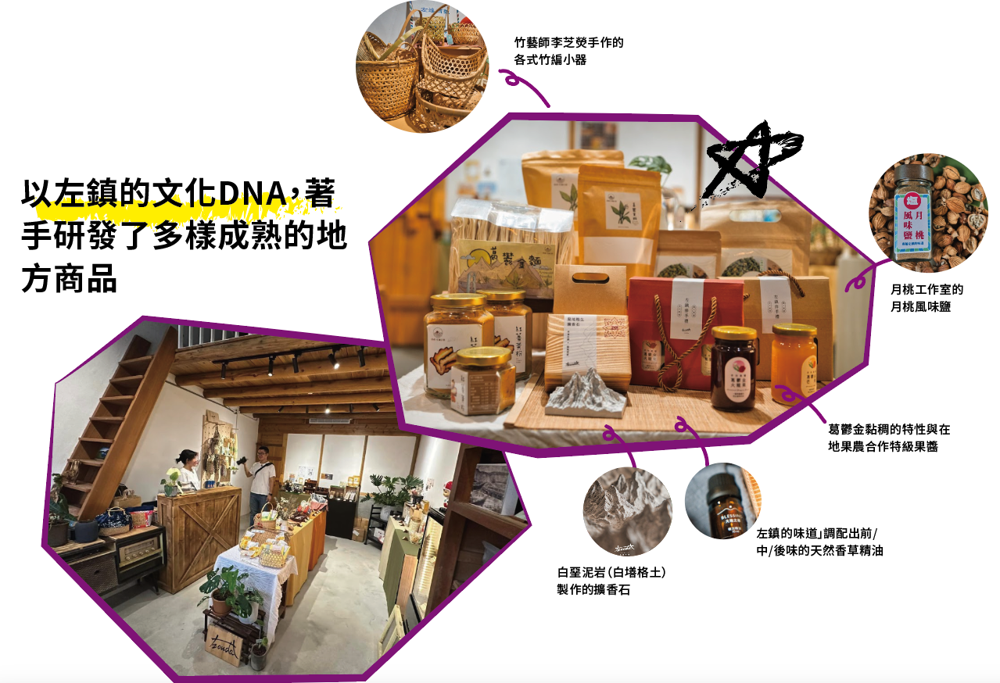
✧（上）商品照（四合一）竹籃、堊地擴香石、左鎮味道香精、月桃風味鹽
✧（下）左達商號位於左鎮老街修復街屋之一
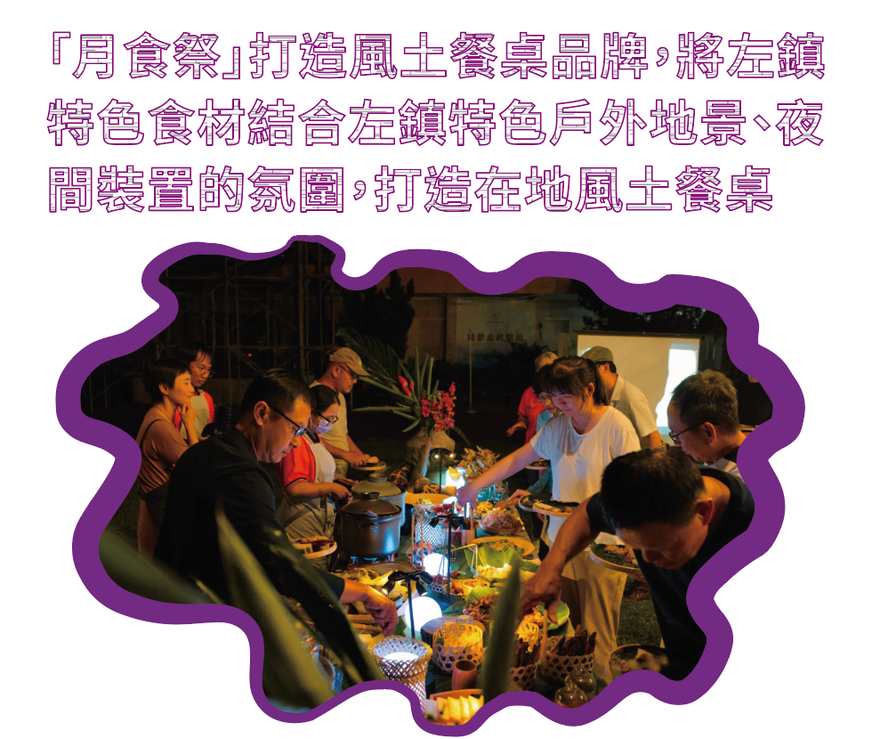
✧ 2024月食祭（2024年9月）
賴達任職左鎮公舘社區期間，與理事長柳足姐、青年夥伴鍾凱勳及其他青年，共同推出「月食祭」打造風土餐桌品牌，將左鎮特色食材結合左鎮特色戶外地景、夜間裝置的氛圍，打造在地風土餐桌，第一年於二寮觀景平台、次年移師鄰近蔗埕公園街屋庭院辦理。
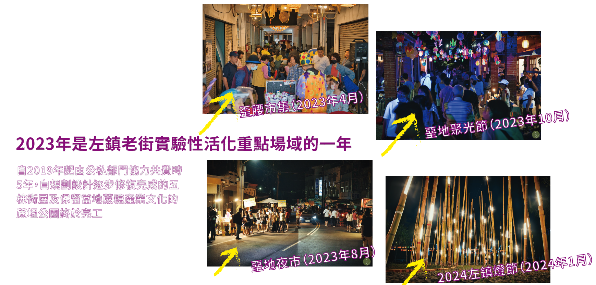
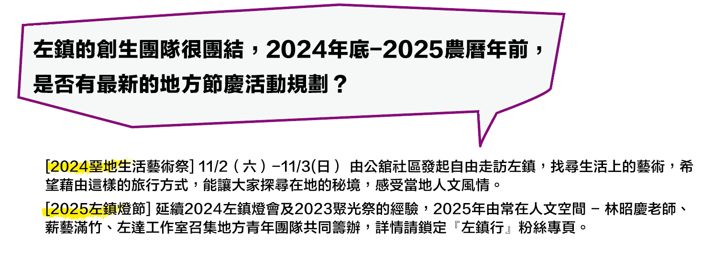
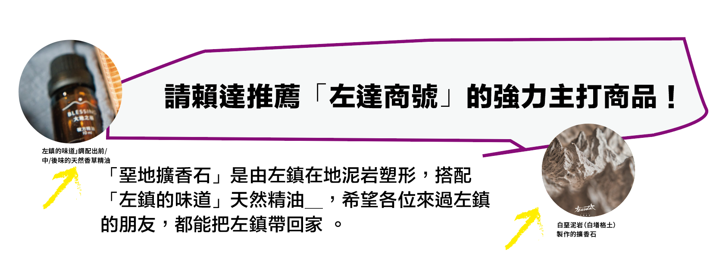
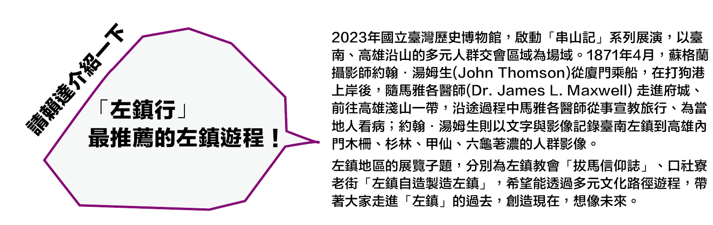
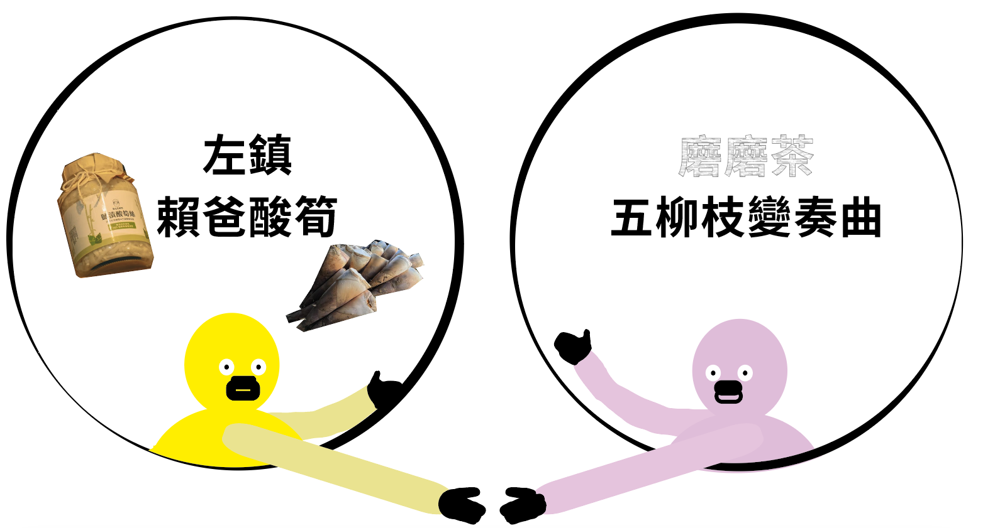

前往➜